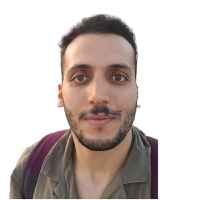

Statistical inference from scientific signals
Fourier-domain analysis, astronomical time series, weak periodic signals, uncertainty and hypothesis testing.

MATHEMATICS · MACHINE LEARNING · SCIENTIFIC COMPUTING
Machine Learning Engineer & Astrophysics and Statistical Researcher
I study how to extract reliable knowledge from complex data—and how to turn that knowledge into useful computational systems.
My background is in mathematics and high-energy astrophysics. During my Ph.D. at the University of Cagliari, I investigated X-ray variability and quasiperiodic signals from compact astronomical sources, working at the intersection of numerical methods, statistical inference and scientific software.
My interests now extend to industrial measurement modelling, retrieval-augmented applications and reproducible ML engineering. Across these domains, I care about careful evaluation, uncertainty and what a result can actually support.
Fourier-domain analysis, astronomical time series, weak periodic signals, uncertainty and hypothesis testing.
Interpretable regression, spectral measurements, validation under grouped or limited data, and reproducible numerical workflows.
Retrieval systems, structured information extraction, evaluation, traceable estimates and practical ML delivery.
Rombo AI · Industrial ML, NMR modelling and applied AI systems
University of Cagliari · Mathematical and statistical methods for high-energy astrophysics
ESA / ESAC, Madrid · Deep learning with Planck survey data
INAF — Cagliari Observatory · X-ray variability and scientific Python workflows
Signal processing, PLS/PCR regression and leakage-aware validation for laboratory measurements.
Explore project ↗ 02 / RETRIEVAL + SOFTWARECustomQuoteAI: grounded catalog assistanceRetrieval-assisted option discovery with component-level traceability and explicit internal cost safeguards.
Explore project ↗FERO-10 — poster presentation
QPOs in the M82's Ultraluminous X-ray Sources · Toulouse, France · Official participants list ↗
AI Summer School & Hackathon
Participant · Al Akhawayn University, Ifrane · 21–26 July 2024 · Event report ↗
University of Cagliari, Italy · High-energy astrophysics, statistics and scientific computing
University of Cagliari, Italy
Mohammed V University, Morocco
I welcome research collaborations, opportunities in machine learning and scientific computing, and questions about my work. You can reach me directly by email or connect with me on LinkedIn.